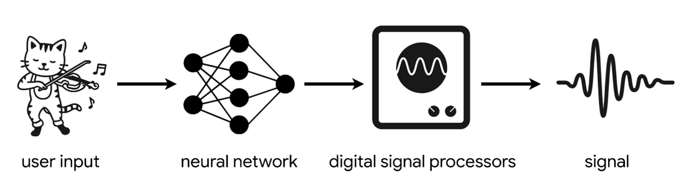
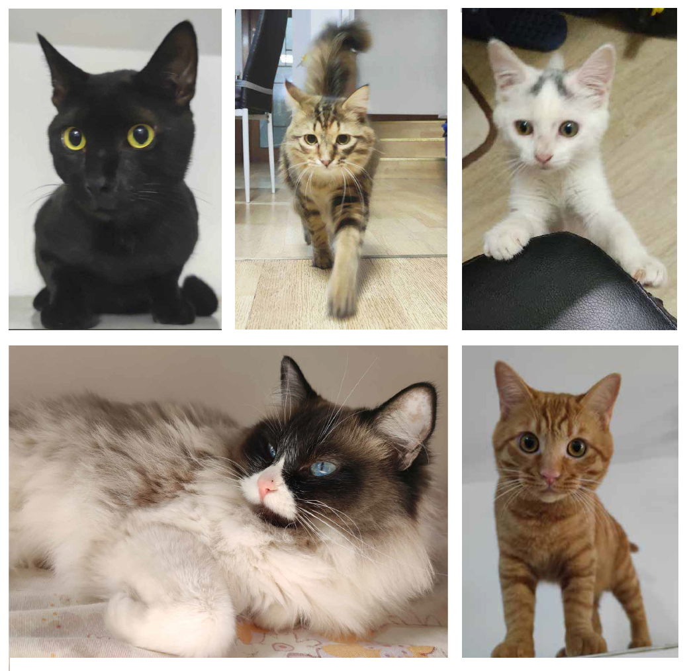

Music Visualization
Duration: 3 days Tools: HTML + Javascript
Convert music to traditional Chinese instruments by DDSP
Duration: 2 weeks Tools: Python + Pytorch + DDSP
DDSP (Differentiable Digital Signal Processing) is a machine learning approach that combines traditional digital signal processing (DSP) techniques with deep learning. It allows audio generation models to be trained end-to-end by using differentiable DSP operations, such as filters and oscillators.

The following is a simplification of DDSP’s neural network. It illustrates the steps that a piece of audio goes through to be synthesized into what I wished.

In order to achieve the transformation of a any piece of music into a particular instrument that I intended, I employed the DDSP model on my local computer. The model was trained successfully,
and worked OK on convert music to tranditional Chinese instruments as Guqin, Pipa, Erhu.
I am still looking for high quality sound sources as training data, and working on deploying the function to website.
I am still looking for high quality sound sources as training data, and working on deploying the function to website.
The five cats companied me these years.
Duration: 1 week in summer Tools: Unity + OpenCV
I conducted a research guided by CMU Prof. Pradeep Ravikumar, studying a novel sampling method in machine learning named SimCore to enhance image classification tasks. I later applied this algorithm to develop an app that could identify my cats through facial recognition.

Websites I made
Small projects for Game Design and Development with Unity 2020